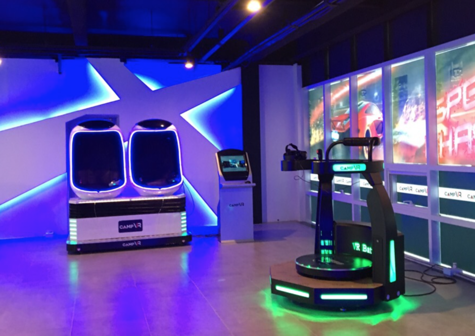

광주에서 또 빠질수 없는 대표적인 먹거리가 있죠 바로 상추 튀김입니다!
그리고 그 상추튀김으로 가장 유명한 분식점이있는데요!
그곳이 바로 무등분식입니다..
여러가지 분식과 함께 맛있는 상추튀김을 즐길수 있는 무등분식 추천!
배도 채웠겠다 슬슬 보면서 즐기자 볼거리 와 즐길거리!
펭귄마을! 처음들어 보는 사람은 펭귄이 있다라는 착각을 할수있는 마을인데요!
아쉽게도 펭귄은 없지만 정감가는 옛날 분위기를 내어서
추억을 느끼고 싶은 어른들이 자주 간다고 하네요!
여러가지 동심을 느끼게 해주는 조형물과 잡동사니들이 함꼐하는 마을인
펭귄마을 한번쯤은 가보는게 어떨까요?

커플이면 자기의 연인과 이색적인 데이트를 하고 싶다면 충장로 camp VR로 모여라!
롤러코스터, 호러, 스키 등등의 여러가지 VR기기들을 시간을 정해놓고 마음껏 이용가능한
camp VR은 당신의 시간을 순식간에 가져갑니다!
평소에 잘 하지 못하는 VR기기를 마음껏 써볼수있는 camp VR로 GOGO!